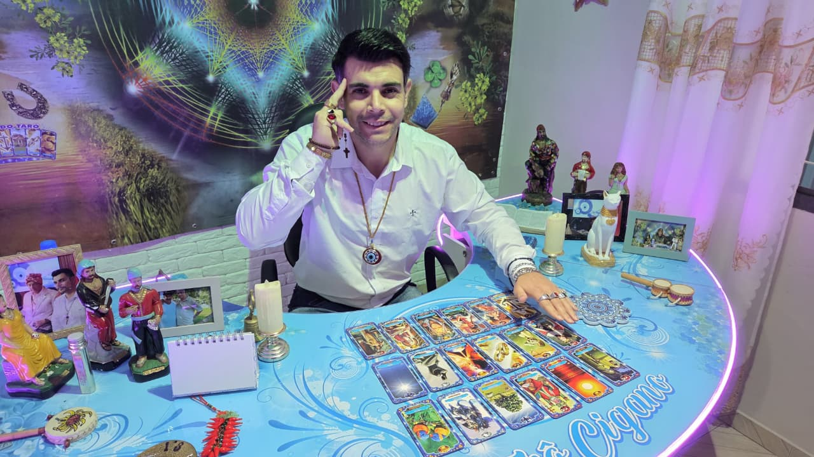

Amor e relacionamentos
Compreenda sentimentos, conflitos, conexões e possibilidades relacionadas à sua vida afetiva.
Tarô Cigano • Espiritualidade • Fé e orientação
Uma orientação realizada com atenção, respeito e sensibilidade, unindo o Tarô Cigano, a espiritualidade e a fé em Deus para ajudar você a compreender situações, possibilidades e caminhos em diferentes áreas da sua vida.
✦ Atendimento acolhedor, confidencial, espiritual e personalizado.

Sobre o tarólogo
O Tarólogo Marcello Bredley é espiritualista que, ao abrir as cartas do Tarô Cigano, é usado por Deus Todo-Poderoso, o Pai das Luzes, para acolher, orientar e ajudar você nas diferentes áreas da sua vida, inclusive por meio de trabalhos espirituais.
As consultas podem ser realizadas presencialmente em seu consultório, em um ambiente espiritual, reservado e acolhedor, localizado na Rua Gabriel Frecceiro de Miranda, 791, bairro Xaxim, em Curitiba, Paraná. Atendimento presencial somente com agendamento.
Para quem prefere ou está em outra localidade, o atendimento também pode ser feito por videochamada, com o mesmo cuidado, conforto, respeito e conexão espiritual.
Conversar com Marcello ↗Tarô, espiritualidade e acolhimento
As cartas e a espiritualidade ajudam a ampliar sua percepção sobre o momento presente, compreender energias e observar novos caminhos com mais clareza, fé e consciência.
Compreenda sentimentos, conflitos, conexões e possibilidades relacionadas à sua vida afetiva.
Encontre clareza diante de mudanças, escolhas, dificuldades e novos caminhos profissionais.
Observe comportamentos, bloqueios e possibilidades relacionados à sua vida financeira.
Identifique energias, bloqueios e possibilidades para seguir em frente com mais segurança e consciência.
Receba acolhimento e orientação em situações pessoais, familiares ou em momentos especialmente difíceis.
Fortaleça sua conexão espiritual, sua esperança, seu autoconhecimento e sua fé em Deus, o Criador e Pai das Luzes.
Simples, pessoal e acolhedor
Clique no botão do WhatsApp e envie uma mensagem para o Marcello.
Conte brevemente o que você busca e combine o melhor horário disponível.
Tenha um atendimento individual com o Tarô Cigano e orientação espiritual voltada às questões que deseja compreender.
Uma conversa com você
Conheça um pouco mais sobre o trabalho do Marcello e entenda como o Tarô Cigano, a espiritualidade e a fé podem ajudar você a observar seus caminhos com mais clareza e esperança.
Experiências compartilhadas
Relatos espontâneos de clientes que autorizaram o compartilhamento de suas experiências com o atendimento de Marcello Bredley.
Relato sobre relacionamento e união.
Carina compartilha sua experiência pessoal.
Impressões sobre a abertura das cartas.
Gerson conta seu testemunho pessoal.
Agradecimento pelas palavras e pela orientação.
Relato sobre união e harmonia familiar.
Uma experiência de mudança na vida profissional.
Relato sobre uma conquista pessoal.
Relato sobre mudanças e união familiar.
Os relatos representam experiências pessoais e individuais. Resultados podem variar de pessoa para pessoa.
Um novo olhar começa aqui
Permita-se compreender melhor seus caminhos, sentimentos e possibilidades por meio de um atendimento individual com o Tarólogo Marcello Bredley, unindo o Tarô Cigano, a espiritualidade e a fé.
Falar com Marcello agora ↗Dúvidas frequentes
Se ainda tiver alguma dúvida, Marcello estará disponível para conversar diretamente com você pelo WhatsApp.
Para agendar, clique em um dos botões do WhatsApp, envie sua mensagem ao Marcello e combine o melhor horário disponível.
Não. O trabalho do Marcello vai além da abertura das cartas e também pode envolver orientação, acolhimento e auxílio espiritual, sempre de acordo com a necessidade de cada pessoa.
Podem ser abordadas questões relacionadas ao amor, família, trabalho, finanças, decisões, abertura de caminhos, autoconhecimento e espiritualidade.
Sim. Cada atendimento é realizado de maneira individual, respeitosa e confidencial.
Entre em contato pelo WhatsApp para conversar diretamente com o Marcello e receber as informações atualizadas sobre disponibilidade, horários e valores.
Atendimento presencial
O consultório está localizado no bairro Xaxim, em Curitiba, em um ambiente reservado, confortável e preparado para o seu atendimento espiritual.
Rua Gabriel Frecceiro de Miranda, 791 Xaxim — Curitiba, Paraná CEP 81810-480Atendimento presencial somente com agendamento.
Como chegar ↗Vamos conversar?
Conte brevemente o que você busca e dê o primeiro passo em direção a uma nova perspectiva e ao fortalecimento espiritual.
WhatsApp (41) 99685-8734